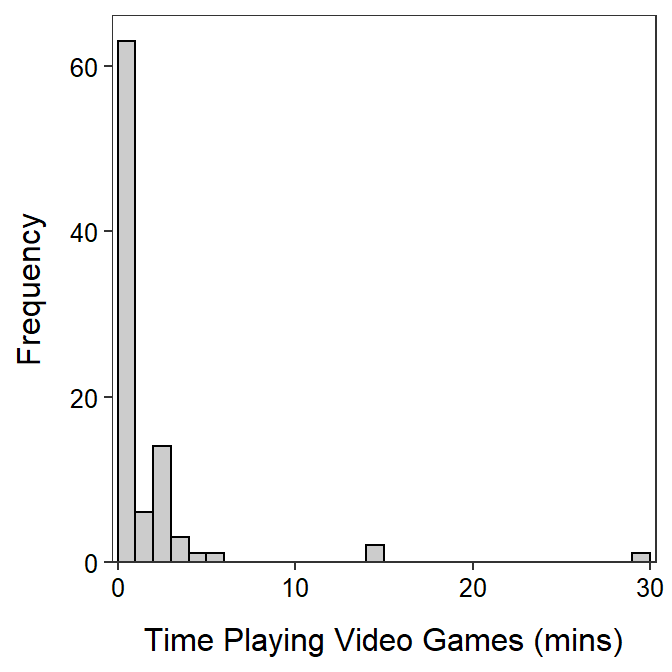
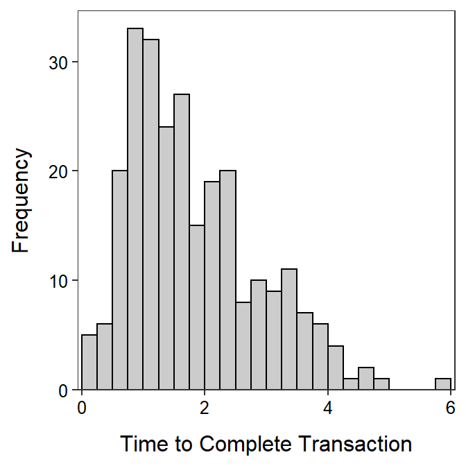

For a class project, a student asked 91 students how much time they had spent playing video games in the last two days. Use the results in Figure 1 and Table 1 to construct a univariate EDA for these data.

Figure 1: Histogram for the time playing video games (mins) by sampled students.
Table 1: Summary statistics for the time playing video games (mins) by sampled students.
n mean sd min Q1 median Q3 max percZero
91.00 1.24 3.78 0.00 0.00 0.00 1.25 30.00 62.64 Cunningham and Heathcote (1989) recorded the total transaction time (in hours) for a large number of transactions at a branch office of a large Australian bank. Describe the distribution of these data from Figure 2 and Table 2.

Figure 2: Histogram for the time (hrs) to complete a transactin for an Australian bank.
Table 2: Summary statistics for the time (hrs) to complete a transactin for an Australian bank.
n mean sd min Q1 median Q3 max
261.00 1.84 1.05 0.14 1.00 1.55 2.42 5.76
The Environmental Protection Agency (EPA) commissioned the Gallup Organization to conduct a nationwide telephone survey of 1000 households during August and September of 2002 regarding consumer knowledge and satisfaction with drinking water quality. Of the 1000 respondents surveyed, 751 knew that their drinking water came from a public or commercial water supplier. Of these 751 respondents, the following percentages knew precisely where that water was derived:
| Source | Groundwater | Lake/ Reservoir | River | Multiple Sources | Don’t Know | Refused to answer |
|---|---|---|---|---|---|---|
| Percentage | 15.9 | 29.2 | 9.6 | 15.7 | 29.4 | 0.2 |